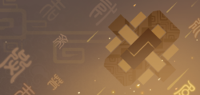
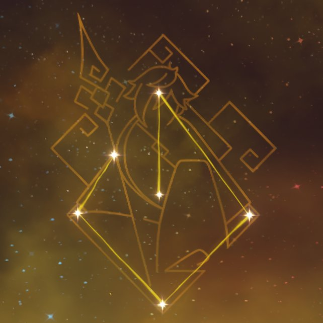

Zhongli
Zhongli (Chinese: 钟离 Zhōnglí) is a playable Geo character in Genshin Impact. He is a consultant of the Wangsheng Funeral Parlor. He is later revealed to be the current vessel of the Geo Archon, Morax, who has decided to experience the world from the perspective of a mortal.
Appearance
Zhongli currently appears as a tall man with fair skin and a stern expression. His eyes are bright and sharp, amber in color with glowing yellow pupils set in the shape of diamonds. He wears red eyeliner on the lower lids of his eyes. When using Geo, his eyes become luminescent. His dark brown hair is styled in a windswept fashion with a longer fringe that hangs from the right side of his face. It fades to amber brown at the tips and is pulled back in a long ponytail that falls beyond his waist. When he is using his Geo abilities, his amber highlights glow. This appearance is also used in The Statues of The Seven's depiction of Rex Lapis around Liyue.
His attire is elegant and form-fitting, consisting of a beige dress shirt, a brown and amber waistcoat, slim black trousers, black dress boots, and black gloves with twin silver archer rings on the thumbs. His neckpiece is a white tie pinned at the throat by an amber gemstone. His left ear is adorned with a jeweled tassel earring. Over everything, he wears a long dark brown tailcoat with dragon scale patterns, gold and silver accents, golden tassels, and Rex Lapis' diamond symbol on the back. Zhongli's clothes are decorated with diamond symbols found on his sleeves, belt, trousers, waistcoat buttons, and tailcoat buttons. Similarly to Venti, because he was an Archon with an innate Gnosis, the "Vision" embedded on his chain at the small of his back is nothing more than a fake.

|
Rarity 5-star |
Weapon Polearm |
Element Geo |
Personality
Zhongli is a calm, reserved, and polite man, who holds an air of
nostalgia. He knows much about Liyue's history and culture in part due
to his time as the Geo Archon; like Venti, he has many experiences and
memories, as he was a god well before The Seven even existed and one
of the oldest still living in Teyvat. He holds philosophical ideas
towards money and has great respect for Liyue's traditions, including
those that have been forgotten or warped over time. Zhongli tends to
be humble, being worried he comes off as a "bourgeois parasite."
Zhongli tends to forget about Mora in transactions, agreeing to spend
large sums of it without having any Mora on hand and even taking
"discounts" as granted despite being an obvious scam. He often ends up
relying on his acquaintances for financial support, such as the
Wangsheng Funeral Parlor or Childe. Although he works for Hu Tao, he
does not like her childish behavior.
It is later revealed that Zhongli's "carelessness" stems from being
the creator of Mora. With the Gnosis allowing him to create limitless
Mora, he never had to worry about running low on his personal
finances. Unfortunately, when he chose to live among mortals, he
lacked the foresight to find an alternative for them to continue
minting Mora in his absence, along with creating a retirement fund for
himself. As a result, he shamelessly spends the Mora of others.
In-Game info
Model Type |
Tall Male |
Birthday |
December 31st |
Constellation |
Lapis Dei, Story Quest Chapter |
Region |
Liyue |
Affiliation |
Liyue Harbor, Wangsheng Funeral Parlor, Archons, Adepti |
Special Dish |
Slow-Cooked Bamboo Shoot Soup |
How to Obtain |
Event Wish - Gentry of Hermitage |
Release Date |
December 01, 2020 |
Namecard
Zhongli: Planet Befall
Obtain: Reward for reaching Friendship Level 10 with Zhongli
Constellation
Meaning: Divine Stone